You can view this notebook on Github.
Why tmmc-lnpy?
tmmc-lnpy is a python package to analyze the main output of Grand Canonical Transition Matrix Monte Carlo (GC-TMMC) simulations: \(\ln \Pi(N)\). Hence the name. The tmmc-lnpy is designed to calculate a host of properties in the Canonical and Grand Canonical ensembles. For a review of GC-TMMC and the property \(\ln \Pi(N)\), look at some of the following references:
Direct evaluation of multicomponent phase equilibria using flat-histogram methods
Direct calculation of liquid–vapor phase equilibria from transition matrix Monte Carlo simulation
\(\Pi(N; \mu, T, V)\) is the macrostate probability of observing \(N\) particles at a given chemical potential \(\mu\), temperature \(T\) and volume \(V\). We drop the explicit mention of \(\mu\), \(V\) and \(T\) below for simplicity. This distribution is related to the grand canonical ensemble by:
Where \(\beta = 1 / (k_{\rm B} T)\) is the inverse temperature, \(k_{\rm B}\) is Boltzmann’s constant, \(Q(N, V, T)\) is the canonical partition function, and \(\Xi(\mu, V, T)\) is the grand canonical partition function. GC-TMMC simulation provide a means to calculate the \(\ln \Pi(N; \mu, V, T)\) directly. One of the truly excellent qualities of such simulations is that once \(\ln \Pi\) is collected at a given chemical potential \(\mu_0\), it can be rescaled to any other chemical potential \(\mu\) through rescaling of the form:
where \(C\) is a normalization constant which does not effect most calculated properties. From \(\ln \Pi(N)\), many thermodynamic properties can be calculated. The grand potential \(\Omega\), and hence the system pressure \(p\), can be obtained from
Also, grand canonical averages can be calculated from canonical averages using \(\ln \Pi(N)\):
Plus, \(\ln \Pi\) can be directly analyzed to identify unique phases, phase transitions, limits of stability, etc. The package tmmc-lnpy provides a simple means to perform all the above calculations simply, and quickly.
A note on the package name
While the distribution is named tmmc-lnpy, it provides the python package lnpy. This naming was done to avoid conflicts with other packages on pypi. The name of the module lnpy may be changed in the future.
Usage
lnPi) can be loaded directly from lnpy package:[1]:
import numpy as np
import lnpy.examples
data_dict = lnpy.examples.load_example_dict('lj_sup')
with np.printoptions(precision=2, suppress=True, threshold=5):
for k,v in data_dict.items():
print(f'{k}:{v}')
lnPi_data:[-1559.75 -1550.74 -1542.43 ... -10.01 -11.02 -12.08]
lnPi_mask:[False False False ... False False False]
state_kws:{'beta': 0.6666666666666666, 'volume': 512.0}
extra_kws:{'PE': array([ 0. , 0. , -0.02, ..., -1643.18, -1648.71, -1654.36])}
lnz:[2.77]
Here, we have the parameters
lnPi_data: the actual value of \(\ln \Pi(N)\).
lnPi_mask: bool array. where
mask == True, values are ‘masked out’state_kws: dict of ‘state’ variables. Here, it include the inverse temperature ‘beta’ \(=\beta = 1/(k_{\rm B} T)\) and the systems volume ‘volume’ \(=V\)
extra_kws: dict of ‘extra’ variables. Here, it include ‘PE’, the canonical potential energy
lnz: log of activity \(\ln z = \beta \mu\), where \(\mu\) is chemical potential.
lnPiMasked
The first important class is lnPiMasked. This class handles the basics of dealing with \(\ln \Pi(N)\). To create it, to the following.
[2]:
%matplotlib inline
import matplotlib.pyplot as plt
ref = lnpy.lnPiMasked.from_data(
lnz=data_dict['lnz'],
lnz_data=data_dict['lnz'],
data=data_dict['lnPi_data'],
mask=data_dict['lnPi_mask'],
state_kws=data_dict['state_kws'],
extra_kws=data_dict['extra_kws']
)
ref
[2]:
<lnPi(lnz=[2.76512052])>
To access the underlying data, use the following
[3]:
plt.plot(ref.data)
[3]:
[<matplotlib.lines.Line2D at 0x1a6b6bcd0>]
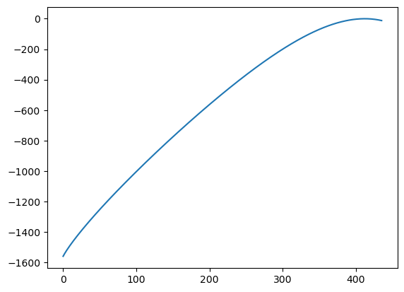
Reweighting results
One of the amazing things about \(\ln \Pi(N)\) calculated at some chemical potential \(\mu_{\rm ref}\) is that it can be reweighted to any other chemical potential \(\mu\). This is done with the formula
To reweight data to another value of \(\ln z\), do the following
[4]:
new = ref.reweight(4.0)
print(new)
# compare to orginal
plt.plot(ref.data, label=ref.lnz)
plt.plot(new.data, label=new.lnz)
<lnPi(lnz=[4.])>
[4]:
[<matplotlib.lines.Line2D at 0x1a6c7c1f0>]
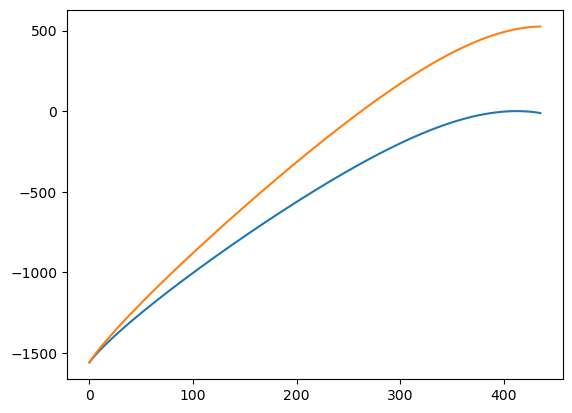
lnPiMasked has a variety of utilities to work with the \(\ln \Pi(N)\) data. For example
zeromax: shift \(\ln \Pi(N)\) such that maximum value is zero. Useful for numerical stability
ma :
MaskedArrayview of data. Used when constructing phases, and working with multicomponent data.
Check out the api docs for further details
Calculating Ensemble properties
\(\ln \Pi(N)\) can be used to calculate a variety of properties in the Canonical and Grand Canonical ensembles. To make everything easier, the actual value of \(\ln \Pi(N)\) is wrapped in an DataArray object, which provides some nice data goodies. To access this view, use the ref.xce or ref.xge accessors (short for Xarray Canonical Ensemble and Xarray Grand canonical Ensemble). For example, the canonical properties can be obtained as follows:
Note: We only show some of the data.
[5]:
# pressure
ref.xce.pressure().head()
[5]:
<xarray.DataArray 'pressure' (n_0: 5)>
array([-0. , 0.00100796, 0.00319043, 0.00560728, 0.00813105])
Coordinates:
beta float64 0.6667
volume float64 512.0
* n_0 (n_0) int64 0 1 2 3 4
Attributes:
long_name: $p({\bf n},V,T)$[6]:
# scaled Helmholtz free energy
ref.xce.betaF().head()
[6]:
<xarray.DataArray 'betaF' (n_0: 5)>
array([ 0. , -6.23817948, -11.78825896, -16.93743845,
-21.80391793])
Coordinates:
beta float64 0.6667
volume float64 512.0
* n_0 (n_0) int64 0 1 2 3 4
Attributes:
dims_n: ['n_0']
dims_lnz: ['lnz_0']
dims_comp: ['component']
dims_state: ['lnz_0', 'beta', 'volume']
dims_rec: []
standard_name: helmholtz_free_energy
long_name: $\beta F({\bf n},V,T)$Look at the documentation for all the properties available. To quickly construct a dataset of multiple properties, use the table method.
[7]:
ds = ref.xce.table(keys=['pressure','betaF'], default_keys=None)
ds
[7]:
<xarray.Dataset>
Dimensions: (n_0: 436)
Coordinates:
beta float64 0.6667
volume float64 512.0
* n_0 (n_0) int64 0 1 2 3 4 5 6 7 8 ... 428 429 430 431 432 433 434 435
Data variables:
pressure (n_0) float64 -0.0 0.001008 0.00319 0.005607 ... 5.786 5.854 5.893
betaF (n_0) float64 0.0 -6.238 -11.79 -16.94 ... -352.4 -348.7 -344.8
Attributes:
long_name: $p({\bf n},V,T)$This can be easily converted to a pandas.DataFrame
[8]:
ds.to_dataframe().head()
[8]:
| beta | volume | pressure | betaF | |
|---|---|---|---|---|
| n_0 | ||||
| 0 | 0.666667 | 512.0 | -0.000000 | 0.000000 |
| 1 | 0.666667 | 512.0 | 0.001008 | -6.238179 |
| 2 | 0.666667 | 512.0 | 0.003190 | -11.788259 |
| 3 | 0.666667 | 512.0 | 0.005607 | -16.937438 |
| 4 | 0.666667 | 512.0 | 0.008131 | -21.803918 |
To access Grand Canonical properties, use the xge accessor
[9]:
ref.xge.pressure()
[9]:
<xarray.DataArray 'pressure' ()>
array(4.57687966)
Coordinates:
lnz_0 float64 2.765
beta float64 0.6667
volume float64 512.0
Attributes:
dims_n: ['n_0']
dims_lnz: ['lnz_0']
dims_comp: ['component']
dims_state: ['lnz_0', 'beta', 'volume']
dims_rec: []
long_name: $p(\mu,V,T)$[10]:
ref.xge.betaF()
[10]:
<xarray.DataArray 'betaF' ()>
array(-423.16867869)
Coordinates:
lnz_0 float64 2.765
beta float64 0.6667
volume float64 512.0
Attributes:
dims_n: ['n_0']
dims_lnz: ['lnz_0']
dims_comp: ['component']
dims_state: ['lnz_0', 'beta', 'volume']
dims_rec: []
standard_name: helmholtz_free_energy
long_name: $\beta F(\mu,V,T)$Or, to calculate multiple properties, again, use the table method
[11]:
ref.xge.table(keys=['pressure','betaF'], default_keys=None)
[11]:
<xarray.Dataset>
Dimensions: ()
Coordinates:
lnz_0 float64 2.765
beta float64 0.6667
volume float64 512.0
Data variables:
pressure float64 4.577
betaF float64 -423.2
Attributes:
dims_n: ['n_0']
dims_lnz: ['lnz_0']
dims_comp: ['component']
dims_state: ['lnz_0', 'beta', 'volume']
dims_rec: []
long_name: $p(\mu,V,T)$The great thing about using the xarray interface is that things like plotting become trivial. For example, use
[12]:
ref.xge.lnpi().plot()
[12]:
[<matplotlib.lines.Line2D at 0x1a6d734c0>]
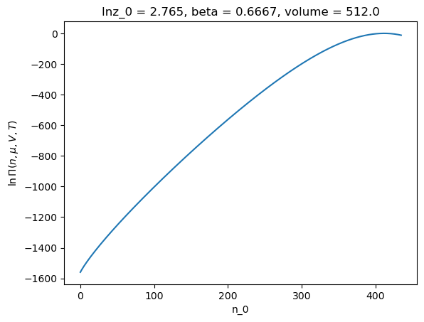
Collections of lnPi Values
Ok, we can reweight a \(\ln \Pi(N)\) from one chemical potential to another, and calculate a variety of properties for a \(\ln \Pi(N)\). But what if we want to calculate properties at a variety of values of \(\ln z\). We could do list comprehension, but that’s slow, and can get unwieldy. Instead, lnPi provides a helper class to deal with multiple lnPis. To use it, we must first have a PhaseCreator. We will discuss this object in detail later, but for now, know that for
the simple case of a single component system that does not have any phase transitions, it suffices to use the following.
[13]:
phase_creator = lnpy.PhaseCreator(nmax=1, ref=ref)
build_phases = phase_creator.build_phases_mu([None])
To create a collection of with of lnPi at different values of lnz, use the following:
[14]:
c = lnpy.lnPiCollection.from_builder(lnzs=np.linspace(-10, 3, 2000), build_phases=build_phases)
[15]:
c
[15]:
<class lnPiCollection>
lnz_0 phase
-10.000000 0 [-10.0]
-9.993497 0 [-9.993496748374188]
-9.986993 0 [-9.986993496748374]
-9.980490 0 [-9.980490245122562]
-9.973987 0 [-9.973986993496748]
...
2.973987 0 [2.973986993496748]
2.980490 0 [2.980490245122562]
2.986993 0 [2.986993496748374]
2.993497 0 [2.993496748374188]
3.000000 0 [3.0]
Length: 2000, dtype: object
lnPiCollection is a wrapper around pandas.Series. This provides an index for each lnPiMasked instance. This allows some niceties like indexing by value, groupby, etc.
[16]:
# Select by postion
# scalar index gives object
c.iloc[1]
[16]:
<lnPi(lnz=[-9.99349675])>
[17]:
# array-like gives lnPiCollection instance
(c.iloc[[1]])
[17]:
<class lnPiCollection>
lnz_0 phase
-9.993497 0 [-9.993496748374188]
dtype: object
[18]:
# select by value. Same as indexing into pandas.Series
c.loc[[3.0]]
[18]:
<class lnPiCollection>
lnz_0 phase
3.0 0 [3.0]
dtype: object
[19]:
# can also query
c.query('lnz_0 > 2.95')
[19]:
<class lnPiCollection>
lnz_0 phase
2.954477 0 [2.95447723861931]
2.960980 0 [2.960980490245122]
2.967484 0 [2.967483741870936]
2.973987 0 [2.973986993496748]
2.980490 0 [2.980490245122562]
2.986993 0 [2.986993496748374]
2.993497 0 [2.993496748374188]
3.000000 0 [3.0]
dtype: object
Accessing properties of collection
The really nice thing about lnPiColletion is that all the properties for all the lnPiMasked objects can be calculated at once, in a vectorized way. The same accessor xge is available to lnPiCollection as for lnPiMasked. Note that the xce accessor is not available, as it only makes sense for a single value of lnPiMasked.
[20]:
# Note the smart indexing. The index is inherited from lnPiCollection.index
c.xge.pressure()
[20]:
<xarray.DataArray 'pressure' (lnz_0: 2000, phase: 1)>
array([[6.80940123e-05],
[6.85383141e-05],
[6.89855151e-05],
...,
[4.84631185e+00],
[4.85425839e+00],
[4.86220769e+00]])
Coordinates:
* lnz_0 (lnz_0) float64 -10.0 -9.993 -9.987 -9.98 ... 2.98 2.987 2.993 3.0
* phase (phase) int64 0
beta float64 0.6667
volume float64 512.0
Attributes:
dims_n: ['n_0']
dims_lnz: ['lnz_0']
dims_comp: ['component']
dims_state: ['lnz_0', 'beta', 'volume']
dims_rec: ['sample']
long_name: $p(\mu,V,T)$[21]:
# plot the results
c.xge.pressure().plot()
[21]:
[<matplotlib.lines.Line2D at 0x1a6e28190>]
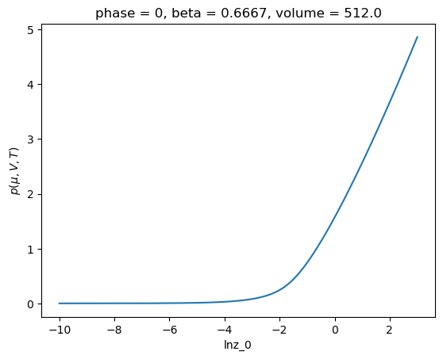
This is much more convenient (and much faster) than doing something like:
[22]:
# Don't do things like this
# It's super slow
import xarray as xr
pressures = [x.xge.pressure() for x in c]
xr.concat(pressures, dim='lnz_0').plot()
[22]:
[<matplotlib.lines.Line2D at 0x1a703ec40>]
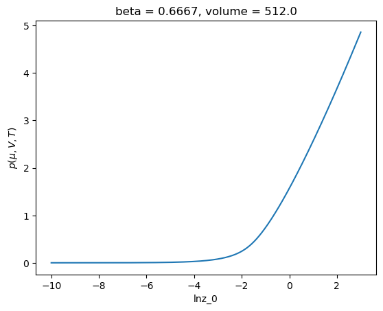
Loading examples
lnPi comes with some pre-defined examples. We say above loading a dictionary of data that we then turned into a lnPiMasked object. This can be streamlined using the following:
[23]:
import lnpy.examples
ref = lnpy.examples.load_example_maskddata('lj_sup')
ref
[23]:
<lnPi(lnz=[2.76512052])>
Alternatively, for some examples, you can load an object with contains a predefined PhaseCreator object. We’ll save this for later.
Single component system with phase transitions.
Next, let’s consider a system with a phase transition. First, lets load some example data
[24]:
%matplotlib inline
import matplotlib.pyplot as plt
import lnpy
import lnpy.examples
import numpy as np
import xarray as xr
# Subcritical LJ data
ref = lnpy.examples.load_example_maskddata('lj_sub')
[25]:
# look at the lnPi values
ref.xge.lnpi().plot()
[25]:
[<matplotlib.lines.Line2D at 0x1a7c61b20>]
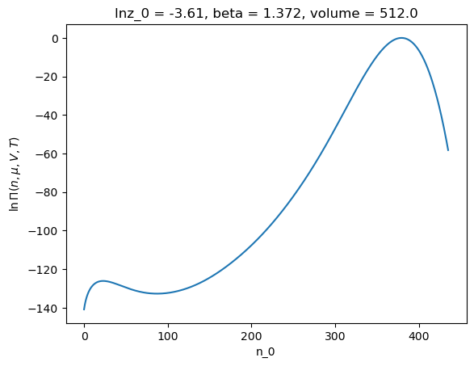
lnPiMasked doesn’t make sense. Instead, the lnPiMasked should be divided into phases. The division should be at the local minima in \(\ln \Pi(N)\) (at approximately n_0=100 in the example above). To perform the segmentation, we turn back to the PhaseCreator object. Let see how this works[26]:
# This creates a `PhaseCreator` object
phase_creator = lnpy.PhaseCreator(
nmax=2,
nmax_peak=4,
ref=ref,
merge_kws={'efac': 0.8}
)
[27]:
# call the `build_phases` method creates a lnPiCollection of phases
p = phase_creator.build_phases()
p
[27]:
<class lnPiCollection>
lnz_0 phase
-3.609956 0 [-3.6099564097351307]
1 [-3.6099564097351307]
dtype: object
[28]:
# plot the lnpi values for each 'phase'
p.xge.lnpi().plot(hue='lnz_0')
[28]:
[<matplotlib.lines.Line2D at 0x1a7cfbfd0>,
<matplotlib.lines.Line2D at 0x1a7cfbeb0>]
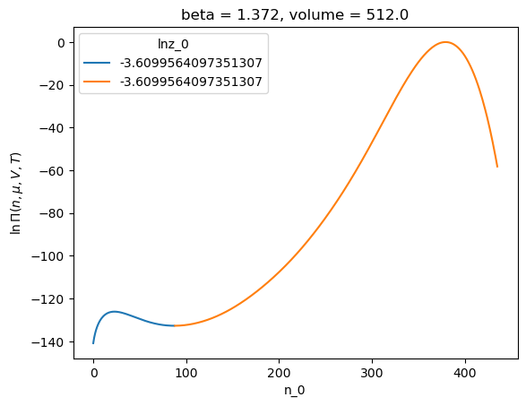
What just happened? To segment \(\ln \Pi(N)\) the code does the following:, we For this we do the following
Find the local maxima of the \(\ln \Pi(N)\). This is done using
lnpy.segment.peak_local_max_adptive, which is an an adaptive version ofskimage.feature.peak_local_max. This finds at mostnmax_peak. Note thatnmax_peakcan be any number.Use the
watershedsegmentation algorithm from theskimagepackage to segment \(-\ln \Pi\) into regions about the local minima in \(-\ln \Pi\) (local maxima in \(\ln \Pi\)).Remove any phases that have to low a transition energy. We discuss this further below.
If the number of ‘phases’ is greater than the maximum allowed number of phases. Merge them. This is done by analyzing the transition energy between phases. Discussed further below.
Merge phases that have same
phase_id. Discussed further below.Pass list of
lnPiMaskedobjects and createdindextophases_factoryfunction. Discussed further below.return result
OK, that’s a bunch of steps. Let take them one at a time.
Breaking it down segmentation
local maxima
[29]:
maxima_marker = lnpy.peak_local_max_adaptive(ref.data, num_peaks_max=4, mask=~ref.mask, style='marker')
maxima_index = np.where(maxima_marker > 0)
[30]:
plt.plot(ref.data)
plt.plot(maxima_index[0], ref.data[maxima_index], marker='o', ls='None')
[30]:
[<matplotlib.lines.Line2D at 0x1a815a4c0>]
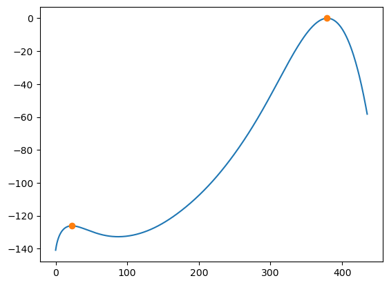
Watershed
OK, great. Now we can segment the data. lnPi provides a wrapper to watershed through lnpy.segment.Segmenter.
[31]:
s = lnpy.segment.Segmenter()
[32]:
labels = s.watershed(-ref.data, markers=maxima_marker, mask=~ref.mask)
labels
[32]:
array([1, 1, 1, 1, 1, 1, 1, 1, 1, 1, 1, 1, 1, 1, 1, 1, 1, 1, 1, 1, 1, 1,
1, 1, 1, 1, 1, 1, 1, 1, 1, 1, 1, 1, 1, 1, 1, 1, 1, 1, 1, 1, 1, 1,
1, 1, 1, 1, 1, 1, 1, 1, 1, 1, 1, 1, 1, 1, 1, 1, 1, 1, 1, 1, 1, 1,
1, 1, 1, 1, 1, 1, 1, 1, 1, 1, 1, 1, 1, 1, 1, 1, 1, 1, 1, 1, 1, 1,
2, 2, 2, 2, 2, 2, 2, 2, 2, 2, 2, 2, 2, 2, 2, 2, 2, 2, 2, 2, 2, 2,
2, 2, 2, 2, 2, 2, 2, 2, 2, 2, 2, 2, 2, 2, 2, 2, 2, 2, 2, 2, 2, 2,
2, 2, 2, 2, 2, 2, 2, 2, 2, 2, 2, 2, 2, 2, 2, 2, 2, 2, 2, 2, 2, 2,
2, 2, 2, 2, 2, 2, 2, 2, 2, 2, 2, 2, 2, 2, 2, 2, 2, 2, 2, 2, 2, 2,
2, 2, 2, 2, 2, 2, 2, 2, 2, 2, 2, 2, 2, 2, 2, 2, 2, 2, 2, 2, 2, 2,
2, 2, 2, 2, 2, 2, 2, 2, 2, 2, 2, 2, 2, 2, 2, 2, 2, 2, 2, 2, 2, 2,
2, 2, 2, 2, 2, 2, 2, 2, 2, 2, 2, 2, 2, 2, 2, 2, 2, 2, 2, 2, 2, 2,
2, 2, 2, 2, 2, 2, 2, 2, 2, 2, 2, 2, 2, 2, 2, 2, 2, 2, 2, 2, 2, 2,
2, 2, 2, 2, 2, 2, 2, 2, 2, 2, 2, 2, 2, 2, 2, 2, 2, 2, 2, 2, 2, 2,
2, 2, 2, 2, 2, 2, 2, 2, 2, 2, 2, 2, 2, 2, 2, 2, 2, 2, 2, 2, 2, 2,
2, 2, 2, 2, 2, 2, 2, 2, 2, 2, 2, 2, 2, 2, 2, 2, 2, 2, 2, 2, 2, 2,
2, 2, 2, 2, 2, 2, 2, 2, 2, 2, 2, 2, 2, 2, 2, 2, 2, 2, 2, 2, 2, 2,
2, 2, 2, 2, 2, 2, 2, 2, 2, 2, 2, 2, 2, 2, 2, 2, 2, 2, 2, 2, 2, 2,
2, 2, 2, 2, 2, 2, 2, 2, 2, 2, 2, 2, 2, 2, 2, 2, 2, 2, 2, 2, 2, 2,
2, 2, 2, 2, 2, 2, 2, 2, 2, 2, 2, 2, 2, 2, 2, 2, 2, 2, 2, 2, 2, 2,
2, 2, 2, 2, 2, 2, 2, 2, 2, 2, 2, 2, 2, 2, 2, 2, 2, 2], dtype=int32)
Each unique value in labels corresponds to a phase. We can construct multiple lnPiMasked objects from labels using
local free energy
Now, we look at the local free energy. The local (scaled) free energy is defined as \(w(N) = \beta f(N) = -\ln \Pi(N)\). We consider the energy at the location of the local minima in \(w\) (local maxima in \(\ln \Pi\)) versus the value of \(w\) at the transition between phases (around \(n=100\) in the figure above). This is performed by the class wFreeEnergy.
[33]:
w = lnpy.wFreeEnergy.from_labels(data=ref.data, labels=labels)
[34]:
# this is the same as -lnPi[maxima]
w.w_min
[34]:
array([[126.12754742],
[ -0. ]])
[35]:
-ref.data[maxima_index]
[35]:
array([126.12754742, -0. ])
[36]:
# w.w_tran[i, j] is the 'transition' energy going from phase i to phase j
w.w_tran
[36]:
array([[ inf, 132.72931142],
[132.72931142, inf]])
[37]:
# the transition between phases '0' and '1' is at index 87
w.w_argtran
[37]:
{(0, 1): (87,)}
[38]:
-ref.data[87]
[38]:
132.72931142169
[39]:
# the change in energy between the phases
w.delta_w
[39]:
array([[ inf, 6.601764 ],
[132.72931142, inf]])
This transition energy means the two phases are stable. So move on.
[40]:
lnpis = ref.list_from_masks(w.masks)
lnpis
[40]:
[<lnPi(lnz=[-3.60995641])>, <lnPi(lnz=[-3.60995641])>]
Construct collection
Now these can be converted to a MaskedlnPiCollection object.
[41]:
p = lnpy.lnPiCollection.from_list(lnpis, index=[0, 1])
p
[41]:
<class lnPiCollection>
lnz_0 phase
-3.609956 0 [-3.6099564097351307]
1 [-3.6099564097351307]
dtype: object
So, the segmentation can get pretty involved. This is why there is the helper class PhaseCreator. There are a slew of options to the different routines. Look at the docs for more information
At a different \(\ln z\) value
Let us instead consider a different value of chemical potential. One near the critical point.
[42]:
p = phase_creator.build_phases(-3.49)
p
[42]:
<class lnPiCollection>
lnz_0 phase
-3.49 0 [-3.49]
1 [-3.49]
dtype: object
[43]:
p.xge.lnpi().plot(hue='phase')
[43]:
[<matplotlib.lines.Line2D at 0x1a7f82ca0>,
<matplotlib.lines.Line2D at 0x1a7f82ee0>]
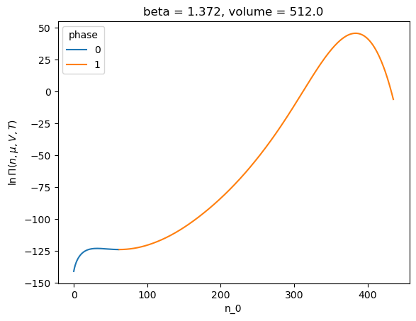
But lets look at the local free energy ‘w’ defined above. This can be obtained by the accessor wfe in lnPiCollection.
[44]:
# min(w) in each phase
p.wfe.w_min
[44]:
lnz_0 phase
-3.49 0 122.930891
1 -45.776165
Name: w_min, dtype: float64
[45]:
# transition w from phase to phase_nebr
p.wfe.w_tran
[45]:
lnz_0 phase phase_nebr
-3.49 0 0 inf
1 123.785912
1 0 123.785912
1 inf
Name: w_tran, dtype: float64
[46]:
# w_tran - w_min
p.wfe.dw
[46]:
lnz_0 phase phase_nebr
-3.49 0 0 inf
1 0.855021
1 0 169.562078
1 inf
Name: delta_w, dtype: float64
We see that the \(\Delta w\) is pretty low at this value of \(\ln z\). We passed in the parameter efac=0.8 in the definition of phase_creator. If we instead wish to remove phases with an energy this low, we can do the following:
[47]:
p = phase_creator.build_phases(-3.49, efac=0.9)
p
[47]:
<class lnPiCollection>
lnz_0 phase
-3.49 0 [-3.49]
dtype: object
Now if the \(\Delta w\) between phases is smaller than efac, the phases are merged. For more information, see that api docs.
Tagging phases
PhaseCreator allows passing a callback tag_phases to attach a label to each phase. By default, the phases are labeled by there list index. This can be confusing, because over a range of \(\ln z\) values, different physical phases can have the same label. For example
[48]:
phase_creator = lnpy.PhaseCreator(
nmax=2,
nmax_peak=4,
ref=ref,
merge_kws={'efac': 0.8}
)
[49]:
c = lnpy.lnPiCollection.from_builder(np.linspace(-10, -2, 50), build_phases=phase_creator.build_phases)
# this looks weird because have multiple phases and not sure which is which
c.xge.pressure().plot(hue='phase')
[49]:
[<matplotlib.lines.Line2D at 0x1a81ffc40>,
<matplotlib.lines.Line2D at 0x1a81ffbe0>]
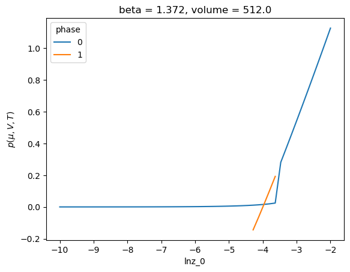
Note that this can be fixed by considering ‘stable’ phases only
[50]:
(
c.xge.table(['mask_stable','pressure'], default_keys=None)
.assign(pressure_stable=lambda x: x['pressure'].where(x['mask_stable']))
.pressure_stable.max('phase')
.plot()
)
[50]:
[<matplotlib.lines.Line2D at 0x1a82b9df0>]
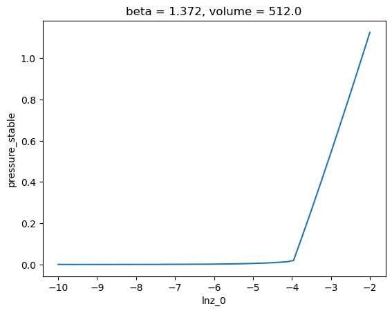
There are two clear phases here. It would be beneficial to label the liquid and vapor phases differently. So we define the callback tag_phases
[51]:
def tag_phases(list_of_phases):
"""Simple tag_phases callback
This looks at the local maximum of each lnPiMasked object.
If location of maximum < len(data)/2 -> phase = 0
else -> phase = 1
"""
if len(list_of_phases) > 2:
raise ValueError('bad tag function')
argmax0 = np.array([xx.local_argmax()[0] for xx in list_of_phases])
return np.where(argmax0 <= list_of_phases[0].shape[0] / 2, 0, 1)
[52]:
phase_creator = lnpy.PhaseCreator(
nmax=2,
nmax_peak=4,
ref=ref,
merge_kws={'efac': 0.8},
tag_phases=tag_phases
)
[53]:
c = lnpy.lnPiCollection.from_builder(np.linspace(-10, -2, 50), build_phases=phase_creator.build_phases)
c.xge.pressure().plot(hue='phase')
[53]:
[<matplotlib.lines.Line2D at 0x1a7cdc700>,
<matplotlib.lines.Line2D at 0x1a7cdc6a0>]
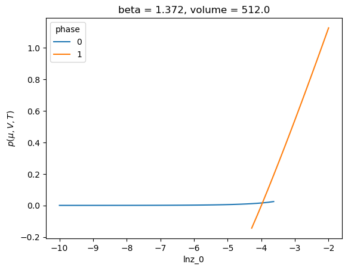
Calculation Binodal and spinodal
The binodal and spinodal can be found using the lnpy.stablity module. This module adds accessors to lnPiCollection class. A collection is needed to provide a decent guess for the location of the binodal and spinodal.
[54]:
%matplotlib inline
import matplotlib.pyplot as plt
import lnpy
import lnpy.examples
import numpy as np
import xarray as xr
# Subcritical LJ data
ref = lnpy.examples.load_example_maskddata('lj_sub')
phase_creator = lnpy.PhaseCreator(
nmax=2,
nmax_peak=4,
ref=ref,
merge_kws={'efac': 0.8},
tag_phases=tag_phases
)
# Here we need a scalar builder object.
build_phases = phase_creator.build_phases_mu([None])
[55]:
# initial guess
c = lnpy.lnPiCollection.from_builder(np.linspace(-10, -2, 10), build_phases=phase_creator.build_phases_mu([None]))
The spinodal is calculates as the location where \(\Delta w\) equals some value. Lets say we want to define the spinodal as the location where \(\Delta w = 1.0\). We do the following:
[56]:
_ = c.spinodal(
phase_ids=2, # the id's of the phases we're considering
build_phases=phase_creator.build_phases_mu([None]),
# this is the efac parameter for
build_kws=dict(efac=0.5),
inplace=True,
as_dict=False,
efac=1.0
)
[57]:
# to access the data as a collection, use the `access` attribute
c.spinodal.access
[57]:
<class lnPiCollection>
spinodal lnz_0 phase
0 -3.494734 0 [-3.494734034735128]
1 [-3.494734034735128]
1 -4.379828 0 [-4.379828176267564]
1 [-4.379828176267564]
dtype: object
[58]:
# energetics
# spinodal 0 is the limit of stability for phase 0 -> phase 1
# spinodal 1 is the limit of stability for phase 1 -> phase 0
c.spinodal.access.wfe.dw
[58]:
spinodal lnz_0 phase phase_nebr
0 -3.494734 0 0 inf
1 1.000000
1 0 168.038523
1 inf
1 -4.379828 0 0 inf
1 142.179651
1 0 1.000000
1 inf
Name: delta_w, dtype: float64
Now that we have the spinodal, we can calculation the binodal
[59]:
_ = c.binodal(
phase_ids=[0, 1],
build_phases=phase_creator.build_phases_mu([None]),
build_kws=dict(efac=0.5),
inplace=True,
)
[60]:
# access as collection with the `access` attribute
c.binodal.access
[60]:
<class lnPiCollection>
binodal lnz_0 phase
0 -3.966438 0 [-3.966438059499727]
1 [-3.966438059499727]
dtype: object
[61]:
# at the binodal, the two phases should have equal pressure
c.binodal.access.xge.pressure()
[61]:
<xarray.DataArray 'pressure' (binodal: 1, lnz_0: 1, phase: 2)>
array([[[0.01594237, 0.01594237]]])
Coordinates:
* binodal (binodal) int64 0
* lnz_0 (lnz_0) float64 -3.966
* phase (phase) int64 0 1
beta float64 1.372
volume float64 512.0
Attributes:
dims_n: ['n_0']
dims_lnz: ['lnz_0']
dims_comp: ['component']
dims_state: ['lnz_0', 'beta', 'volume']
dims_rec: ['sample']
long_name: $p(\mu,V,T)$To append spinodal/binodal to the dataset, use the following:
[62]:
c_total = c.append(c.spinodal.appender).append(c.binodal.appender)
c_total
[62]:
<class lnPiCollection>
lnz_0 phase
-10.000000 0 [-10.0]
-9.111111 0 [-9.11111111111111]
-8.222222 0 [-8.222222222222221]
-7.333333 0 [-7.333333333333334]
-6.444444 0 [-6.444444444444445]
-5.555556 0 [-5.555555555555555]
-4.666667 0 [-4.666666666666667]
-3.777778 0 [-3.7777777777777786]
1 [-3.7777777777777786]
-2.888889 1 [-2.8888888888888893]
-2.000000 1 [-2.0]
-3.494734 0 [-3.494734034735128]
1 [-3.494734034735128]
-4.379828 0 [-4.379828176267564]
1 [-4.379828176267564]
-3.966438 0 [-3.966438059499727]
1 [-3.966438059499727]
dtype: object
and if you’d like to sort the index:
[63]:
c_total.sort_index()
[63]:
<class lnPiCollection>
lnz_0 phase
-10.000000 0 [-10.0]
-9.111111 0 [-9.11111111111111]
-8.222222 0 [-8.222222222222221]
-7.333333 0 [-7.333333333333334]
-6.444444 0 [-6.444444444444445]
-5.555556 0 [-5.555555555555555]
-4.666667 0 [-4.666666666666667]
-4.379828 0 [-4.379828176267564]
1 [-4.379828176267564]
-3.966438 0 [-3.966438059499727]
1 [-3.966438059499727]
-3.777778 0 [-3.7777777777777786]
1 [-3.7777777777777786]
-3.494734 0 [-3.494734034735128]
1 [-3.494734034735128]
-2.888889 1 [-2.8888888888888893]
-2.000000 1 [-2.0]
dtype: object
Multi component systems
lnPi is designed to work with single and multicomponent systems. Let’s take a look at a system without phase transitions to start.
[64]:
import lnpy.examples
[65]:
data = lnpy.examples.load_example_dict('ljmix_sup')
[66]:
f, a = plt.subplots(figsize=(4,4))
a.imshow(data['lnPi_data'])
[66]:
<matplotlib.image.AxesImage at 0x1a7c51af0>
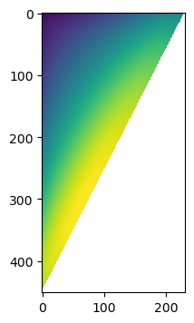
We have finite data along the upper corner of the matrix ‘lnPi_data’. Therefore, the base lnPiMasked object, without splitting into phases, also will have a mask. This is why everything was build up from the numpy.ma.MaskedArray class.
[67]:
data
[67]:
{'lnPi_data': array([[-759.26449941, -756.19423037, -753.77081946, ..., -424.28411489,
-425.66274776, -426.93571412],
[-755.52637941, -752.42375982, -749.96557613, ..., -418.59148639,
-419.73805248, nan],
[-752.45715941, -749.31971691, -746.82151608, ..., -413.26963103,
-414.54424182, nan],
...,
[-104.40479985, -102.4117824 , nan, ..., nan,
nan, nan],
[-105.98668385, nan, nan, ..., nan,
nan, nan],
[-107.62349885, nan, nan, ..., nan,
nan, nan]]),
'lnPi_mask': array([[False, False, False, ..., False, False, False],
[False, False, False, ..., False, False, True],
[False, False, False, ..., False, False, True],
...,
[False, False, True, ..., True, True, True],
[False, True, True, ..., True, True, True],
[False, True, True, ..., True, True, True]]),
'state_kws': {'temp': 0.8, 'beta': 1.25, 'volume': 512},
'extra_kws': {},
'lnz': array([-2.5, -2.5])}
[68]:
ref = lnpy.lnPiMasked.from_data(
lnz=data['lnz'],
lnz_data=data['lnz'],
data = data['lnPi_data'],
mask = data['lnPi_mask'],
state_kws = data['state_kws'],
extra_kws = data['extra_kws'],
)
Note that we could have also done:
[69]:
ref = lnpy.lnPiMasked.from_data(
lnz = data['lnz'],
lnz_data=data['lnz'],
data = data['lnPi_data'],
mask = np.isnan(data['lnPi_data']),
state_kws = data['state_kws'],
extra_kws = data['extra_kws'],
)
Considering lines of constant \(\ln z\) or constant \(\Delta \ln z\).
Considering a multicomponent system will hopefully help explain why some design choices were made for lnpy.
It is common to want to consider a multicomponent system along lines of constant ‘something’. For example, we might want to consider a spectrum of values of \(\ln z_0\) while holding \(\ln z_1\) constant. This can be accomplished using some built in PhaseCreator constructors.
First, note that if you know that a particular system will not have a phase transition, specify nmax=1. This will make the system skip the lnPi segmentation, which is the slowest process in analyzing \(\ln \Pi(N)\).
[70]:
phase_creator = lnpy.PhaseCreator(nmax=1, ref=ref)
If you just call the phase_creator.build_phases constructor, we have to specify the total (vector) value of \(\ln z\).
[71]:
phase_creator.build_phases(lnz=[0.0, 0.0])
[71]:
<class lnPiCollection>
lnz_0 lnz_1 phase
0.0 0.0 0 [0.0, 0.0]
dtype: object
This is fine. But things like lnPiCollections, Spinodal, and Binodal are setup to work with scalar values of \(\ln z\). So, we have the following constructors:
[72]:
build_phases = phase_creator.build_phases_mu([None, -1.0])
[73]:
build_phases(0.0)
[73]:
<class lnPiCollection>
lnz_0 lnz_1 phase
0.0 -1.0 0 [0.0, -1.0]
dtype: object
PhaseCreator.build_phase_mu returns a constructor at fixed values of \(\ln z\) for all but one component. The component given a value of None (the first component in the example above) is the one we can vary. Then calling this constructor will make a new collection with the requested value of \(\ln z\) for the variable component and the fixed values of \(\ln z\) for other components as defined in the constructor.
We can use this to define a collection easily
[74]:
c = lnpy.lnPiCollection.from_builder(np.linspace(-3, 3, 5), build_phases)
c
[74]:
<class lnPiCollection>
lnz_0 lnz_1 phase
-3.0 -1.0 0 [-3.0, -1.0]
-1.5 -1.0 0 [-1.5, -1.0]
0.0 -1.0 0 [0.0, -1.0]
1.5 -1.0 0 [1.5, -1.0]
3.0 -1.0 0 [3.0, -1.0]
dtype: object
[75]:
# At a different fixed value. This time at fixed lnz_0
build_phases = phase_creator.build_phases_mu([0.5, None])
c = lnpy.lnPiCollection.from_builder(lnzs=np.linspace(-3, 3, 5), build_phases=build_phases)
c
[75]:
<class lnPiCollection>
lnz_0 lnz_1 phase
0.5 -3.0 0 [0.5, -3.0]
-1.5 0 [0.5, -1.5]
0.0 0 [0.5, 0.0]
1.5 0 [0.5, 1.5]
3.0 0 [0.5, 3.0]
dtype: object
Similarly, we can create lnPis at fixed value of \(\Delta \ln z\), where \(\Delta \ln z_k = \ln z_k - \ln z_f\) where \(f\) is the index of the variable component.
[76]:
# fixed value of dlnz_1 = lnz_1 - lnz_0 = 1.0
build_phases = phase_creator.build_phases_dmu([None, 1.0])
c = lnpy.lnPiCollection.from_builder(lnzs=np.linspace(-3, 3, 5), build_phases=build_phases)
c
[76]:
<class lnPiCollection>
lnz_0 lnz_1 phase
-3.0 -2.0 0 [-3.0, -2.0]
-1.5 -0.5 0 [-1.5, -0.5]
0.0 1.0 0 [0.0, 1.0]
1.5 2.5 0 [1.5, 2.5]
3.0 4.0 0 [3.0, 4.0]
dtype: object
[77]:
lnz_0 = c.get_index_level('lnz_0')
lnz_1 = c.get_index_level('lnz_1')
[78]:
lnz_1 - lnz_0
[78]:
Float64Index([1.0, 1.0, 1.0, 1.0, 1.0], dtype='float64')
Multicomponent system with phase transitions
Next, we consider a multicomponent system
[79]:
ref = lnpy.examples.load_example_maskddata('hsmix')
ref
[79]:
<lnPi(lnz=[0.5 0.5])>
[80]:
ref.xge.lnpi().plot()
[80]:
<matplotlib.collections.QuadMesh at 0x1a7ba9610>
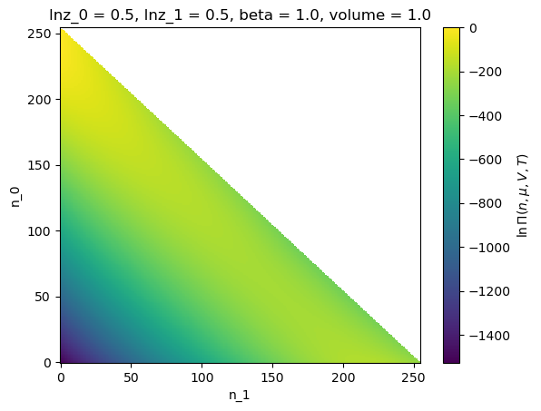
[81]:
#function to tag 'LD' and 'HD' phases
def tag_phases(x):
if len(x) > 2:
raise ValueError('bad tag function')
argmax0 = np.array([xx.local_argmax()[0] for xx in x])
return np.where(argmax0 <= x[0].shape[0] / 2, 0, 1)
phase_creator = lnpy.PhaseCreator(nmax=2, nmax_peak=4, ref=ref, tag_phases=tag_phases,
merge_kws=dict(efac=0.8))
[82]:
build_phases = phase_creator.build_phases_mu([None, 0.0])
c = lnpy.lnPiCollection.from_builder(np.linspace(-5, 5, 50), build_phases, unstack=False)
c
[82]:
<class lnPiCollection>
lnz_0 lnz_1 phase
-5.000000 0.0 0 [-5.0, 0.0]
-4.795918 0.0 0 [-4.795918367346939, 0.0]
-4.591837 0.0 0 [-4.591836734693878, 0.0]
-4.387755 0.0 0 [-4.387755102040816, 0.0]
-4.183673 0.0 0 [-4.183673469387755, 0.0]
...
4.183673 0.0 1 [4.183673469387756, 0.0]
4.387755 0.0 1 [4.387755102040817, 0.0]
4.591837 0.0 1 [4.591836734693878, 0.0]
4.795918 0.0 1 [4.795918367346939, 0.0]
5.000000 0.0 1 [5.0, 0.0]
Length: 65, dtype: object
Note that here we have used the unstack=False option. This means that the results in xge will not be unstacked. For example:
[83]:
c.xge.betaOmega()
[83]:
<xarray.DataArray 'betaOmega' (sample: 65)>
array([-1246.12388491, -1246.12448998, -1246.12523222, -1246.12614278,
-1246.12725991, -1246.1286306 , -1246.13031256, -1246.13237676,
-1246.13491046, -1246.13802107, -1246.14184087, -1246.14653294,
-1246.15229859, -1246.1593867 , -1246.16810551, -1246.1788377 ,
-1246.19205972, -1010.9087438 , -1246.20836701, -1054.37219518,
-1246.22850704, -1098.99423283, -1246.25342379, -1144.4775693 ,
-1246.28431829, -1190.70729484, -1246.32273372, -1237.62335537,
-1246.37067871, -1285.1875377 , -1246.43081409, -1333.37342804,
-1246.50675309, -1382.15798324, -1246.60358765, -1431.51759825,
-1246.72896095, -1481.42620374, -1246.89609727, -1531.84252007,
-1247.1319439 , -1582.68976406, -1247.47204378, -1633.86017062,
-1247.86446355, -1685.24884688, -1736.77785101, -1788.39701972,
-1840.07559237, -1891.79461328, -1943.54206924, -1995.3100774 ,
-2047.093286 , -2098.88794914, -2150.69137525, -2202.50158717,
-2254.3171055 , -2306.13680626, -2357.95982463, -2409.78548824,
-2461.61326981, -2513.44275296, -2565.27360693, -2617.10556771,
-2668.9384238 ])
Coordinates:
* sample (sample) object MultiIndex
* lnz_0 (sample) float64 -5.0 -4.796 -4.592 -4.388 ... 4.592 4.796 5.0
* lnz_1 (sample) float64 0.0 0.0 0.0 0.0 0.0 0.0 ... 0.0 0.0 0.0 0.0 0.0
* phase (sample) int64 0 0 0 0 0 0 0 0 0 0 0 0 ... 1 1 1 1 1 1 1 1 1 1 1 1
beta float64 1.0
volume float64 1.0
Attributes:
dims_n: ['n_0', 'n_1']
dims_lnz: ['lnz_0', 'lnz_1']
dims_comp: ['component']
dims_state: ['lnz_0', 'lnz_1', 'beta', 'volume']
dims_rec: ['sample']
standard_name: grand_potential
long_name: $\beta \Omega(\mu,V,T)$To ‘unstack’ from ‘sample’ dimension to ‘lnz_0’, ‘lnz_1’, etc, you can call unstack directly:
[84]:
c.xge.betaOmega().unstack()
[84]:
<xarray.DataArray 'betaOmega' (lnz_0: 50, lnz_1: 1, phase: 2)>
array([[[-1246.12388491, nan]],
[[-1246.12448998, nan]],
[[-1246.12523222, nan]],
[[-1246.12614278, nan]],
[[-1246.12725991, nan]],
[[-1246.1286306 , nan]],
[[-1246.13031256, nan]],
[[-1246.13237676, nan]],
[[-1246.13491046, nan]],
[[-1246.13802107, nan]],
...
[[ nan, -2202.50158717]],
[[ nan, -2254.3171055 ]],
[[ nan, -2306.13680626]],
[[ nan, -2357.95982463]],
[[ nan, -2409.78548824]],
[[ nan, -2461.61326981]],
[[ nan, -2513.44275296]],
[[ nan, -2565.27360693]],
[[ nan, -2617.10556771]],
[[ nan, -2668.9384238 ]]])
Coordinates:
* lnz_0 (lnz_0) float64 -5.0 -4.796 -4.592 -4.388 ... 4.388 4.592 4.796 5.0
* lnz_1 (lnz_1) float64 0.0
* phase (phase) int64 0 1
beta float64 1.0
volume float64 1.0
Attributes:
dims_n: ['n_0', 'n_1']
dims_lnz: ['lnz_0', 'lnz_1']
dims_comp: ['component']
dims_state: ['lnz_0', 'lnz_1', 'beta', 'volume']
dims_rec: ['sample']
standard_name: grand_potential
long_name: $\beta \Omega(\mu,V,T)$[85]:
c.xge.betaOmega().unstack().plot(hue='phase')
[85]:
[<matplotlib.lines.Line2D at 0x1a7d319d0>,
<matplotlib.lines.Line2D at 0x1a5874550>]
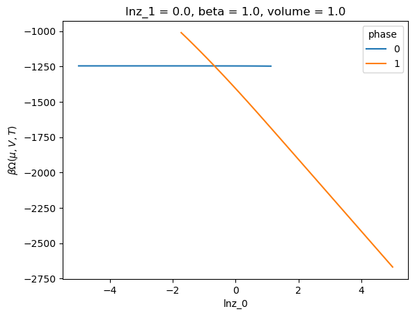
[86]:
# spinodal along line of constant lnz_2
_ = c.spinodal.__call__(phase_ids=[0,1], build_phases=build_phases, efac=1.0, inplace=True)
_ = c.binodal.__call__(phase_ids=[0,1], build_phases=build_phases, inplace=True)
[87]:
# create table for spinodal/binodal
t_spin = c.spinodal.access.xge.table(['molfrac'], ref=ref)
t_bino = c.binodal.access.xge.table(['molfrac'], ref=ref)
[88]:
t_spin
[88]:
<xarray.Dataset>
Dimensions: (sample: 4, component: 2)
Coordinates:
* sample (sample) object MultiIndex
* spinodal (sample) int64 0 0 1 1
* lnz_0 (sample) float64 1.202 1.202 -1.806 -1.806
* lnz_1 (sample) float64 0.0 0.0 0.0 0.0
* phase (sample) int64 0 1 0 1
beta float64 1.0
volume float64 1.0
Dimensions without coordinates: component
Data variables:
edge_distance (sample) float64 31.11 1.0 31.11 29.7
molfrac (sample, component) float64 0.01297 0.987 ... 0.979 0.02102
nvec (sample, component) float64 2.715 206.5 252.4 ... 206.7 4.438
betapV (sample) float64 1.248e+03 1.705e+03 1.246e+03 996.1
Attributes:
dims_n: ['n_0', 'n_1']
dims_lnz: ['lnz_0', 'lnz_1']
dims_comp: ['component']
dims_state: ['lnz_0', 'lnz_1', 'beta', 'volume']
dims_rec: ['sample']
long_name: distance from upper edge[89]:
t_spin.reset_index('sample').to_dataframe().query('component==0 and spinodal==phase').dropna()
[89]:
| spinodal | lnz_0 | lnz_1 | phase | beta | volume | edge_distance | molfrac | nvec | betapV | ||
|---|---|---|---|---|---|---|---|---|---|---|---|
| sample | component | ||||||||||
| 0 | 0 | 0 | 1.201575 | 0.0 | 0 | 1.0 | 1.0 | 31.112698 | 0.012974 | 2.714673 | 1248.009992 |
| 3 | 0 | 1 | -1.805724 | 0.0 | 1 | 1.0 | 1.0 | 29.698485 | 0.978978 | 206.675356 | 996.095608 |
doing this for multiple values of fixed lnz_1:
[90]:
from joblib import Parallel, delayed
from tqdm.notebook import tqdm
def get_bin_spin1(lnz2, phase_creator, from_builder, from_builder_kws=None):
build_phases = phase_creator.build_phases_mu([None, lnz2])
lnzs = np.linspace(-8, 8, 20)
if from_builder_kws is None:
from_builder_kws = {}
c = from_builder(lnzs, build_phases, **from_builder_kws)
t_spin = None
t_bino = None
try:
c.spinodal(2, build_phases, inplace=True, unstack=False)
c.binodal(2, build_phases, inplace=True, unstack=False)
t_spin = c.spinodal.access.xge.table(['molfrac'], ref=ref)
t_bino = c.binodal.access.xge.table(['molfrac'], ref=ref)
except:
pass
return t_spin, t_bino
[91]:
out1 = Parallel(n_jobs=-1)(delayed(get_bin_spin1)(lnz2, phase_creator, lnpy.lnPiCollection.from_builder)
for lnz2 in np.arange(-5, 5, 0.5)
)
spin1 = xr.concat([s for s, b in out1 if s is not None], 'sample')
bino1 = xr.concat([b for s, b in out1 if b is not None], 'sample')
[92]:
def plot_frame(df, **kws):
(
df
.reset_index()
.set_index(['molfrac','phase'])
.assign(pV=lambda x: x['betapV'] / x['beta'])
['pV']
.to_xarray()
.plot(hue='phase', **kws)
)
plot_frame(spin1.reset_index('sample').to_dataframe().query('component==0 and spinodal==phase').dropna(), ls='--', color='k')
plot_frame(bino1.reset_index('sample').to_dataframe().query('component==0').dropna(), color='r')
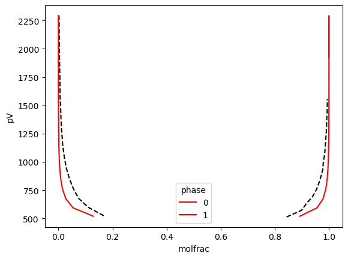